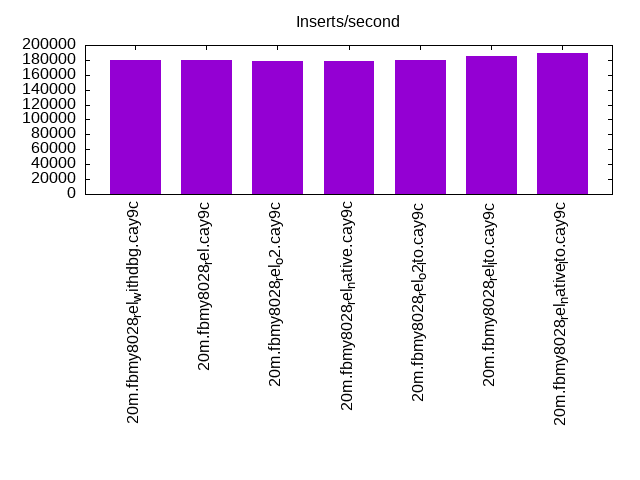
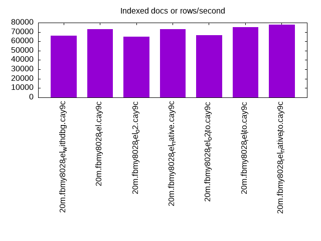
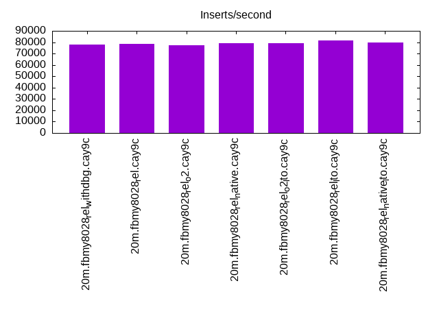
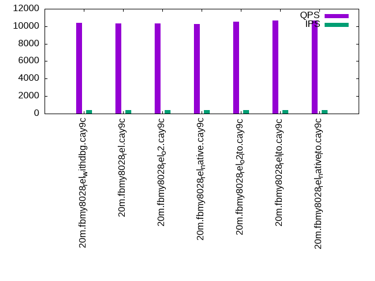
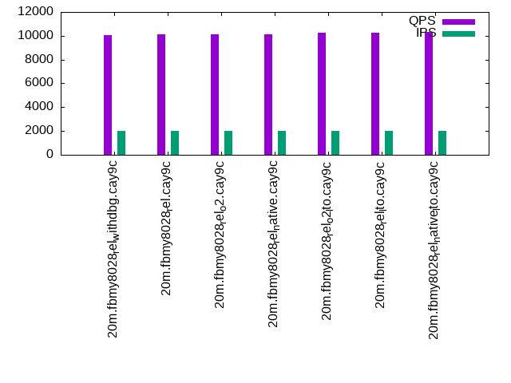
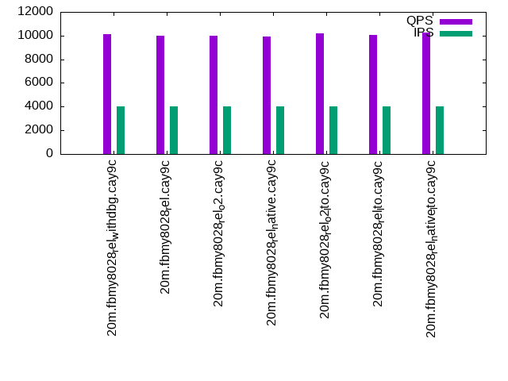

This is a report for the insert benchmark with 20M docs and 4 client(s). It is generated by scripts (bash, awk, sed) and Tufte might not be impressed. An overview of the insert benchmark is here and a short update is here. Below, by DBMS, I mean DBMS+version.config. An example is my8020.c10b40 where my means MySQL, 8020 is version 8.0.20 and c10b40 is the name for the configuration file.
The test server has 8 AMD cores, 16G RAM and an NVMe SSD. It is described here as the Beelink. The benchmark was run with 1 client and there were 1 or 2 connections per client (1 for queries, 1 for inserts). The benchmark loads 20M rows without secondary indexes, creates secondary indexes, loads another 20M rows then does 3 read+write tests for one hour each that do queries as fast as possible with 100, 500 and then 1000 writes/second/client concurrent with the queries. The database is cached by the storage engine and the only IO is for writes. Clients and the DBMS share one server. The per-database configs are in the per-database subdirectories here.
The tested DBMS are:
The numbers are inserts/s for l.i0 and l.i1, indexed docs (or rows) /s for l.x and queries/s for q*.2. The values are the average rate over the entire test for inserts (IPS) and queries (QPS). The range of values for IPS and QPS is split into 3 parts: bottom 25%, middle 50%, top 25%. Values in the bottom 25% have a red background, values in the top 25% have a green background and values in the middle have no color. A gray background is used for values that can be ignored because the DBMS did not sustain the target insert rate. Red backgrounds are not used when the minimum value is within 80% of the max value.
| dbms | l.i0 | l.x | l.i1 | q100.1 | q500.1 | q1000.1 |
|---|---|---|---|---|---|---|
| 20m.fbmy8028_rel_withdbg.cay9c | 180180 | 66118 | 78125 | 10373 | 10076 | 10131 |
| 20m.fbmy8028_rel.cay9c | 180180 | 73091 | 78431 | 10323 | 10155 | 9994 |
| 20m.fbmy8028_rel_o2.cay9c | 178571 | 65048 | 77519 | 10334 | 10101 | 10002 |
| 20m.fbmy8028_rel_native.cay9c | 178571 | 72826 | 79051 | 10255 | 10097 | 9908 |
| 20m.fbmy8028_rel_o2_lto.cay9c | 180180 | 66337 | 79051 | 10551 | 10286 | 10160 |
| 20m.fbmy8028_rel_lto.cay9c | 185185 | 75281 | 81301 | 10659 | 10279 | 10088 |
| 20m.fbmy8028_rel_native_lto.cay9c | 188679 | 77606 | 80000 | 10654 | 10307 | 10240 |
This lists the average rate of inserts/s for the tests that do inserts concurrent with queries. For such tests the query rate is listed in the table above. The read+write tests are setup so that the insert rate should match the target rate every second. Cells that are not at least 95% of the target have a red background to indicate a failure to satisfy the target.
| dbms | q100.1 | q500.1 | q1000.1 |
|---|---|---|---|
| fbmy8028_rel_withdbg.cay9c | 399 | 1994 | 3989 |
| fbmy8028_rel.cay9c | 399 | 1994 | 3989 |
| fbmy8028_rel_o2.cay9c | 399 | 1994 | 3989 |
| fbmy8028_rel_native.cay9c | 399 | 1993 | 3989 |
| fbmy8028_rel_o2_lto.cay9c | 399 | 1994 | 3989 |
| fbmy8028_rel_lto.cay9c | 399 | 1993 | 3989 |
| fbmy8028_rel_native_lto.cay9c | 399 | 1994 | 3989 |
| target | 400 | 2000 | 4000 |
l.i0: load without secondary indexes. Graphs for performance per 1-second interval are here.
Average throughput:
Insert response time histogram: each cell has the percentage of responses that take <= the time in the header and max is the max response time in seconds. For the max column values in the top 25% of the range have a red background and in the bottom 25% of the range have a green background. The red background is not used when the min value is within 80% of the max value.
| dbms | 256us | 1ms | 4ms | 16ms | 64ms | 256ms | 1s | 4s | 16s | gt | max |
|---|---|---|---|---|---|---|---|---|---|---|---|
| fbmy8028_rel_withdbg.cay9c | 99.352 | 0.437 | 0.198 | 0.013 | 0.120 | ||||||
| fbmy8028_rel.cay9c | 99.354 | 0.427 | 0.205 | 0.013 | 0.118 | ||||||
| fbmy8028_rel_o2.cay9c | 99.356 | 0.419 | 0.211 | 0.013 | 0.116 | ||||||
| fbmy8028_rel_native.cay9c | 99.364 | 0.407 | 0.215 | 0.013 | 0.129 | ||||||
| fbmy8028_rel_o2_lto.cay9c | 99.343 | 0.448 | 0.195 | 0.013 | 0.126 | ||||||
| fbmy8028_rel_lto.cay9c | 99.364 | 0.398 | 0.224 | 0.013 | 0.118 | ||||||
| fbmy8028_rel_native_lto.cay9c | 99.369 | 0.450 | 0.168 | 0.013 | 0.119 |
Performance metrics for the DBMS listed above. Some are normalized by throughput, others are not. Legend for results is here.
ips qps rps rmbps wps wmbps rpq rkbpq wpi wkbpi csps cpups cspq cpupq dbgb1 dbgb2 rss maxop p50 p99 tag 180180 0 0 0.0 98.5 37.4 0.000 0.000 0.001 0.213 17766 68.2 0.099 30 0.7 1.9 0.7 0.120 50945 43852 20m.fbmy8028_rel_withdbg.cay9c 180180 0 0 0.0 97.6 37.0 0.000 0.000 0.001 0.210 17620 67.7 0.098 30 0.7 1.9 0.7 0.118 50945 42353 20m.fbmy8028_rel.cay9c 178571 0 0 0.0 101.1 38.7 0.000 0.000 0.001 0.222 17695 68.5 0.099 31 0.7 1.9 0.7 0.116 50845 39956 20m.fbmy8028_rel_o2.cay9c 178571 0 0 0.0 96.5 36.6 0.000 0.000 0.001 0.210 17616 67.9 0.099 30 0.7 2.0 0.7 0.129 50545 33963 20m.fbmy8028_rel_native.cay9c 180180 0 0 0.0 99.9 37.7 0.000 0.000 0.001 0.214 17631 68.0 0.098 30 0.7 1.9 0.7 0.126 51344 20578 20m.fbmy8028_rel_o2_lto.cay9c 185185 0 0 0.0 104.5 40.1 0.000 0.000 0.001 0.222 18133 68.5 0.098 30 0.7 1.9 0.7 0.118 52843 6893 20m.fbmy8028_rel_lto.cay9c 188679 0 0 0.0 102.8 39.1 0.000 0.000 0.001 0.212 18364 68.2 0.097 29 0.7 2.0 0.7 0.119 53542 4595 20m.fbmy8028_rel_native_lto.cay9c
l.x: create secondary indexes.
Average throughput:
Performance metrics for the DBMS listed above. Some are normalized by throughput, others are not. Legend for results is here.
ips qps rps rmbps wps wmbps rpq rkbpq wpi wkbpi csps cpups cspq cpupq dbgb1 dbgb2 rss maxop p50 p99 tag 66118 0 0 0.0 26.0 10.0 0.000 0.000 0.000 0.155 357 12.8 0.005 15 1.4 2.7 1.9 0.009 NA NA 20m.fbmy8028_rel_withdbg.cay9c 73091 0 0 0.0 29.0 11.3 0.000 0.000 0.000 0.158 408 12.8 0.006 14 1.4 2.6 1.9 0.014 NA NA 20m.fbmy8028_rel.cay9c 65048 0 0 0.0 25.3 9.8 0.000 0.000 0.000 0.155 358 12.8 0.006 16 1.4 2.6 2.0 0.009 NA NA 20m.fbmy8028_rel_o2.cay9c 72826 0 0 0.0 28.4 11.1 0.000 0.000 0.000 0.156 411 12.8 0.006 14 1.4 2.6 2.0 0.014 NA NA 20m.fbmy8028_rel_native.cay9c 66337 0 0 0.0 25.7 10.0 0.000 0.000 0.000 0.154 366 12.8 0.006 15 1.4 2.6 1.9 0.009 NA NA 20m.fbmy8028_rel_o2_lto.cay9c 75281 0 0 0.0 29.4 11.4 0.000 0.000 0.000 0.156 381 12.8 0.005 14 1.4 2.7 2.0 0.009 NA NA 20m.fbmy8028_rel_lto.cay9c 77606 0 0 0.0 29.9 11.7 0.000 0.000 0.000 0.154 367 12.8 0.005 13 1.4 2.6 1.9 0.008 NA NA 20m.fbmy8028_rel_native_lto.cay9c
l.i1: continue load after secondary indexes created. Graphs for performance per 1-second interval are here.
Average throughput:
Insert response time histogram: each cell has the percentage of responses that take <= the time in the header and max is the max response time in seconds. For the max column values in the top 25% of the range have a red background and in the bottom 25% of the range have a green background. The red background is not used when the min value is within 80% of the max value.
| dbms | 256us | 1ms | 4ms | 16ms | 64ms | 256ms | 1s | 4s | 16s | gt | max |
|---|---|---|---|---|---|---|---|---|---|---|---|
| fbmy8028_rel_withdbg.cay9c | 99.019 | 0.864 | 0.110 | 0.006 | 0.128 | ||||||
| fbmy8028_rel.cay9c | 98.977 | 0.890 | 0.130 | 0.003 | 0.102 | ||||||
| fbmy8028_rel_o2.cay9c | 99.034 | 0.836 | 0.125 | 0.005 | 0.123 | ||||||
| fbmy8028_rel_native.cay9c | 99.059 | 0.819 | 0.118 | 0.004 | 0.120 | ||||||
| fbmy8028_rel_o2_lto.cay9c | 99.128 | 0.735 | 0.132 | 0.005 | 0.137 | ||||||
| fbmy8028_rel_lto.cay9c | 99.137 | 0.739 | 0.119 | 0.006 | 0.122 | ||||||
| fbmy8028_rel_native_lto.cay9c | 99.085 | 0.798 | 0.111 | 0.006 | 0.135 |
Performance metrics for the DBMS listed above. Some are normalized by throughput, others are not. Legend for results is here.
ips qps rps rmbps wps wmbps rpq rkbpq wpi wkbpi csps cpups cspq cpupq dbgb1 dbgb2 rss maxop p50 p99 tag 78125 0 12 1.5 145.4 58.3 0.000 0.020 0.002 0.764 17436 71.8 0.223 74 3.3 5.2 2.6 0.128 20028 15833 20m.fbmy8028_rel_withdbg.cay9c 78431 0 0 0.0 149.9 60.2 0.000 0.000 0.002 0.786 17394 71.6 0.222 73 5.2 7.1 2.5 0.102 20035 16082 20m.fbmy8028_rel.cay9c 77519 0 3 0.4 147.2 58.7 0.000 0.005 0.002 0.775 17385 72.3 0.224 75 5.2 7.1 2.5 0.123 19878 15833 20m.fbmy8028_rel_o2.cay9c 79051 0 9 1.2 146.1 58.3 0.000 0.015 0.002 0.755 17663 71.7 0.223 73 4.0 5.9 2.5 0.120 20178 15883 20m.fbmy8028_rel_native.cay9c 79051 0 3 0.4 150.5 60.0 0.000 0.005 0.002 0.777 17569 72.5 0.222 73 4.9 6.8 2.5 0.137 20139 15283 20m.fbmy8028_rel_o2_lto.cay9c 81301 0 11 1.4 153.5 61.4 0.000 0.017 0.002 0.774 18149 71.4 0.223 70 4.0 5.9 2.5 0.122 20777 15583 20m.fbmy8028_rel_lto.cay9c 80000 0 12 1.6 150.7 60.4 0.000 0.020 0.002 0.773 17882 70.8 0.224 71 3.5 5.4 2.6 0.135 20427 14840 20m.fbmy8028_rel_native_lto.cay9c
q100.1: range queries with 100 insert/s per client. Graphs for performance per 1-second interval are here.
Average throughput:
Query response time histogram: each cell has the percentage of responses that take <= the time in the header and max is the max response time in seconds. For max values in the top 25% of the range have a red background and in the bottom 25% of the range have a green background. The red background is not used when the min value is within 80% of the max value.
| dbms | 256us | 1ms | 4ms | 16ms | 64ms | 256ms | 1s | 4s | 16s | gt | max |
|---|---|---|---|---|---|---|---|---|---|---|---|
| fbmy8028_rel_withdbg.cay9c | 7.466 | 92.520 | 0.014 | 0.001 | 0.013 | ||||||
| fbmy8028_rel.cay9c | 5.803 | 94.178 | 0.018 | 0.001 | 0.013 | ||||||
| fbmy8028_rel_o2.cay9c | 5.719 | 94.265 | 0.015 | 0.001 | 0.014 | ||||||
| fbmy8028_rel_native.cay9c | 4.681 | 95.302 | 0.016 | 0.001 | 0.011 | ||||||
| fbmy8028_rel_o2_lto.cay9c | 9.397 | 90.589 | 0.013 | 0.001 | nonzero | 0.018 | |||||
| fbmy8028_rel_lto.cay9c | 10.593 | 89.391 | 0.016 | 0.001 | 0.012 | ||||||
| fbmy8028_rel_native_lto.cay9c | 11.576 | 88.409 | 0.015 | nonzero | 0.009 |
Insert response time histogram: each cell has the percentage of responses that take <= the time in the header and max is the max response time in seconds. For max values in the top 25% of the range have a red background and in the bottom 25% of the range have a green background. The red background is not used when the min value is within 80% of the max value.
| dbms | 256us | 1ms | 4ms | 16ms | 64ms | 256ms | 1s | 4s | 16s | gt | max |
|---|---|---|---|---|---|---|---|---|---|---|---|
| fbmy8028_rel_withdbg.cay9c | 99.493 | 0.465 | 0.042 | 0.017 | |||||||
| fbmy8028_rel.cay9c | 99.639 | 0.312 | 0.049 | 0.023 | |||||||
| fbmy8028_rel_o2.cay9c | 99.625 | 0.347 | 0.028 | 0.018 | |||||||
| fbmy8028_rel_native.cay9c | 99.410 | 0.542 | 0.049 | 0.021 | |||||||
| fbmy8028_rel_o2_lto.cay9c | 99.444 | 0.507 | 0.049 | 0.017 | |||||||
| fbmy8028_rel_lto.cay9c | 99.292 | 0.667 | 0.042 | 0.017 | |||||||
| fbmy8028_rel_native_lto.cay9c | 99.535 | 0.424 | 0.042 | 0.022 |
Performance metrics for the DBMS listed above. Some are normalized by throughput, others are not. Legend for results is here.
ips qps rps rmbps wps wmbps rpq rkbpq wpi wkbpi csps cpups cspq cpupq dbgb1 dbgb2 rss maxop p50 p99 tag 399 10373 4 0.2 6.5 1.5 0.000 0.019 0.016 3.880 39319 51.1 3.791 394 2.8 4.9 5.7 0.013 2637 2110 20m.fbmy8028_rel_withdbg.cay9c 399 10323 42 0.4 7.3 1.9 0.004 0.040 0.018 4.806 39248 51.2 3.802 397 2.8 4.8 6.5 0.013 2589 2030 20m.fbmy8028_rel.cay9c 399 10334 33 0.4 7.1 1.8 0.003 0.035 0.018 4.670 39228 51.3 3.796 397 2.8 4.8 6.7 0.014 2621 2078 20m.fbmy8028_rel_o2.cay9c 399 10255 16 0.2 6.9 1.7 0.002 0.024 0.017 4.271 38973 51.1 3.801 399 2.8 4.8 6.4 0.011 2558 2046 20m.fbmy8028_rel_native.cay9c 399 10551 34 0.4 7.4 1.9 0.003 0.034 0.019 4.938 39949 51.3 3.786 389 2.8 4.9 6.7 0.018 2654 2110 20m.fbmy8028_rel_o2_lto.cay9c 399 10659 16 0.2 6.7 1.6 0.001 0.021 0.017 4.128 40463 51.1 3.796 384 2.8 4.8 6.4 0.012 2669 2046 20m.fbmy8028_rel_lto.cay9c 399 10654 8 0.2 6.5 1.5 0.001 0.018 0.016 3.812 40398 51.1 3.792 384 2.8 4.9 5.8 0.009 2653 2142 20m.fbmy8028_rel_native_lto.cay9c
q500.1: range queries with 500 insert/s per client. Graphs for performance per 1-second interval are here.
Average throughput:
Query response time histogram: each cell has the percentage of responses that take <= the time in the header and max is the max response time in seconds. For max values in the top 25% of the range have a red background and in the bottom 25% of the range have a green background. The red background is not used when the min value is within 80% of the max value.
| dbms | 256us | 1ms | 4ms | 16ms | 64ms | 256ms | 1s | 4s | 16s | gt | max |
|---|---|---|---|---|---|---|---|---|---|---|---|
| fbmy8028_rel_withdbg.cay9c | 3.029 | 96.875 | 0.090 | 0.006 | nonzero | 0.016 | |||||
| fbmy8028_rel.cay9c | 2.553 | 97.365 | 0.079 | 0.004 | nonzero | 0.019 | |||||
| fbmy8028_rel_o2.cay9c | 1.615 | 98.292 | 0.088 | 0.005 | nonzero | 0.018 | |||||
| fbmy8028_rel_native.cay9c | 2.000 | 97.910 | 0.086 | 0.004 | nonzero | 0.020 | |||||
| fbmy8028_rel_o2_lto.cay9c | 4.266 | 95.667 | 0.063 | 0.004 | nonzero | 0.020 | |||||
| fbmy8028_rel_lto.cay9c | 4.968 | 94.953 | 0.076 | 0.004 | nonzero | 0.020 | |||||
| fbmy8028_rel_native_lto.cay9c | 6.084 | 93.834 | 0.078 | 0.005 | nonzero | 0.016 |
Insert response time histogram: each cell has the percentage of responses that take <= the time in the header and max is the max response time in seconds. For max values in the top 25% of the range have a red background and in the bottom 25% of the range have a green background. The red background is not used when the min value is within 80% of the max value.
| dbms | 256us | 1ms | 4ms | 16ms | 64ms | 256ms | 1s | 4s | 16s | gt | max |
|---|---|---|---|---|---|---|---|---|---|---|---|
| fbmy8028_rel_withdbg.cay9c | 92.436 | 7.429 | 0.133 | 0.001 | 0.065 | ||||||
| fbmy8028_rel.cay9c | 97.408 | 2.514 | 0.078 | 0.063 | |||||||
| fbmy8028_rel_o2.cay9c | 92.654 | 7.183 | 0.161 | 0.001 | 0.069 | ||||||
| fbmy8028_rel_native.cay9c | 93.132 | 6.743 | 0.125 | 0.060 | |||||||
| fbmy8028_rel_o2_lto.cay9c | 96.250 | 3.636 | 0.112 | 0.001 | 0.084 | ||||||
| fbmy8028_rel_lto.cay9c | 98.219 | 1.706 | 0.075 | 0.061 | |||||||
| fbmy8028_rel_native_lto.cay9c | 95.583 | 4.318 | 0.099 | 0.063 |
Performance metrics for the DBMS listed above. Some are normalized by throughput, others are not. Legend for results is here.
ips qps rps rmbps wps wmbps rpq rkbpq wpi wkbpi csps cpups cspq cpupq dbgb1 dbgb2 rss maxop p50 p99 tag 1994 10076 0 0.0 6.9 1.7 0.000 0.000 0.003 0.858 38202 51.6 3.791 410 3.2 3.6 7.4 0.016 2510 2030 20m.fbmy8028_rel_withdbg.cay9c 1994 10155 0 0.0 7.3 1.9 0.000 0.000 0.004 0.959 38531 51.6 3.794 407 3.2 3.6 8.2 0.019 2557 2094 20m.fbmy8028_rel.cay9c 1994 10101 0 0.0 6.9 1.7 0.000 0.000 0.003 0.862 38280 51.6 3.790 409 3.2 3.6 8.5 0.018 2541 2046 20m.fbmy8028_rel_o2.cay9c 1993 10097 0 0.0 7.1 1.8 0.000 0.000 0.004 0.908 38268 51.6 3.790 409 3.2 3.6 8.0 0.020 2542 2031 20m.fbmy8028_rel_native.cay9c 1994 10286 0 0.0 7.0 1.8 0.000 0.000 0.004 0.907 38897 51.6 3.781 401 3.2 3.6 8.5 0.020 2573 2094 20m.fbmy8028_rel_o2_lto.cay9c 1993 10279 0 0.0 7.4 1.9 0.000 0.000 0.004 0.970 39043 51.5 3.798 401 3.1 3.6 8.1 0.020 2558 2094 20m.fbmy8028_rel_lto.cay9c 1994 10307 0 0.0 6.9 1.7 0.000 0.000 0.003 0.864 39095 51.5 3.793 400 3.2 3.6 7.6 0.016 2590 2126 20m.fbmy8028_rel_native_lto.cay9c
q1000.1: range queries with 1000 insert/s per client. Graphs for performance per 1-second interval are here.
Average throughput:
Query response time histogram: each cell has the percentage of responses that take <= the time in the header and max is the max response time in seconds. For max values in the top 25% of the range have a red background and in the bottom 25% of the range have a green background. The red background is not used when the min value is within 80% of the max value.
| dbms | 256us | 1ms | 4ms | 16ms | 64ms | 256ms | 1s | 4s | 16s | gt | max |
|---|---|---|---|---|---|---|---|---|---|---|---|
| fbmy8028_rel_withdbg.cay9c | 1.647 | 98.121 | 0.221 | 0.011 | nonzero | 0.049 | |||||
| fbmy8028_rel.cay9c | 1.550 | 98.216 | 0.224 | 0.010 | nonzero | 0.029 | |||||
| fbmy8028_rel_o2.cay9c | 1.278 | 98.512 | 0.199 | 0.010 | nonzero | 0.020 | |||||
| fbmy8028_rel_native.cay9c | 1.014 | 98.771 | 0.206 | 0.009 | nonzero | 0.024 | |||||
| fbmy8028_rel_o2_lto.cay9c | 2.454 | 97.333 | 0.204 | 0.009 | nonzero | 0.024 | |||||
| fbmy8028_rel_lto.cay9c | 3.443 | 96.316 | 0.230 | 0.012 | nonzero | 0.030 | |||||
| fbmy8028_rel_native_lto.cay9c | 4.209 | 95.621 | 0.160 | 0.009 | nonzero | 0.029 |
Insert response time histogram: each cell has the percentage of responses that take <= the time in the header and max is the max response time in seconds. For max values in the top 25% of the range have a red background and in the bottom 25% of the range have a green background. The red background is not used when the min value is within 80% of the max value.
| dbms | 256us | 1ms | 4ms | 16ms | 64ms | 256ms | 1s | 4s | 16s | gt | max |
|---|---|---|---|---|---|---|---|---|---|---|---|
| fbmy8028_rel_withdbg.cay9c | 86.264 | 13.591 | 0.144 | 0.001 | 0.070 | ||||||
| fbmy8028_rel.cay9c | 87.533 | 12.308 | 0.159 | 0.001 | 0.068 | ||||||
| fbmy8028_rel_o2.cay9c | 92.285 | 7.593 | 0.122 | 0.001 | 0.064 | ||||||
| fbmy8028_rel_native.cay9c | 92.111 | 7.767 | 0.122 | 0.001 | 0.066 | ||||||
| fbmy8028_rel_o2_lto.cay9c | 86.456 | 13.365 | 0.176 | 0.002 | 0.097 | ||||||
| fbmy8028_rel_lto.cay9c | 84.105 | 15.694 | 0.199 | 0.001 | 0.075 | ||||||
| fbmy8028_rel_native_lto.cay9c | 96.306 | 3.590 | 0.103 | 0.001 | 0.068 |
Performance metrics for the DBMS listed above. Some are normalized by throughput, others are not. Legend for results is here.
ips qps rps rmbps wps wmbps rpq rkbpq wpi wkbpi csps cpups cspq cpupq dbgb1 dbgb2 rss maxop p50 p99 tag 3989 10131 18 0.6 16.0 4.9 0.002 0.062 0.004 1.270 38095 53.8 3.760 425 3.6 5.0 10.9 0.049 2541 2062 20m.fbmy8028_rel_withdbg.cay9c 3989 9994 6 0.3 15.2 4.7 0.001 0.033 0.004 1.199 37634 53.6 3.766 429 3.7 5.0 10.9 0.029 2525 2094 20m.fbmy8028_rel.cay9c 3989 10002 6 0.5 15.2 4.7 0.001 0.047 0.004 1.196 37553 53.8 3.755 430 3.7 5.1 10.7 0.020 2509 2030 20m.fbmy8028_rel_o2.cay9c 3989 9908 7 0.3 15.1 4.6 0.001 0.030 0.004 1.174 37334 53.6 3.768 433 3.7 5.1 10.8 0.024 2493 2030 20m.fbmy8028_rel_native.cay9c 3989 10160 14 0.5 15.9 4.9 0.001 0.055 0.004 1.254 38017 53.8 3.742 424 3.7 5.1 10.8 0.024 2573 2079 20m.fbmy8028_rel_o2_lto.cay9c 3989 10088 10 0.4 14.3 4.3 0.001 0.042 0.004 1.099 38038 53.2 3.771 422 3.9 5.3 10.8 0.030 2478 2046 20m.fbmy8028_rel_lto.cay9c 3989 10240 7 0.5 15.1 4.6 0.001 0.046 0.004 1.192 38425 53.6 3.753 419 3.7 5.1 11.0 0.029 2557 2110 20m.fbmy8028_rel_native_lto.cay9c
l.i0: load without secondary indexes
Performance metrics for all DBMS, not just the ones listed above. Some are normalized by throughput, others are not. Legend for results is here.
ips qps rps rmbps wps wmbps rpq rkbpq wpi wkbpi csps cpups cspq cpupq dbgb1 dbgb2 rss maxop p50 p99 tag 180180 0 0 0.0 98.5 37.4 0.000 0.000 0.001 0.213 17766 68.2 0.099 30 0.7 1.9 0.7 0.120 50945 43852 20m.fbmy8028_rel_withdbg.cay9c 180180 0 0 0.0 97.6 37.0 0.000 0.000 0.001 0.210 17620 67.7 0.098 30 0.7 1.9 0.7 0.118 50945 42353 20m.fbmy8028_rel.cay9c 178571 0 0 0.0 101.1 38.7 0.000 0.000 0.001 0.222 17695 68.5 0.099 31 0.7 1.9 0.7 0.116 50845 39956 20m.fbmy8028_rel_o2.cay9c 178571 0 0 0.0 96.5 36.6 0.000 0.000 0.001 0.210 17616 67.9 0.099 30 0.7 2.0 0.7 0.129 50545 33963 20m.fbmy8028_rel_native.cay9c 180180 0 0 0.0 99.9 37.7 0.000 0.000 0.001 0.214 17631 68.0 0.098 30 0.7 1.9 0.7 0.126 51344 20578 20m.fbmy8028_rel_o2_lto.cay9c 185185 0 0 0.0 104.5 40.1 0.000 0.000 0.001 0.222 18133 68.5 0.098 30 0.7 1.9 0.7 0.118 52843 6893 20m.fbmy8028_rel_lto.cay9c 188679 0 0 0.0 102.8 39.1 0.000 0.000 0.001 0.212 18364 68.2 0.097 29 0.7 2.0 0.7 0.119 53542 4595 20m.fbmy8028_rel_native_lto.cay9c
l.x: create secondary indexes
Performance metrics for all DBMS, not just the ones listed above. Some are normalized by throughput, others are not. Legend for results is here.
ips qps rps rmbps wps wmbps rpq rkbpq wpi wkbpi csps cpups cspq cpupq dbgb1 dbgb2 rss maxop p50 p99 tag 66118 0 0 0.0 26.0 10.0 0.000 0.000 0.000 0.155 357 12.8 0.005 15 1.4 2.7 1.9 0.009 NA NA 20m.fbmy8028_rel_withdbg.cay9c 73091 0 0 0.0 29.0 11.3 0.000 0.000 0.000 0.158 408 12.8 0.006 14 1.4 2.6 1.9 0.014 NA NA 20m.fbmy8028_rel.cay9c 65048 0 0 0.0 25.3 9.8 0.000 0.000 0.000 0.155 358 12.8 0.006 16 1.4 2.6 2.0 0.009 NA NA 20m.fbmy8028_rel_o2.cay9c 72826 0 0 0.0 28.4 11.1 0.000 0.000 0.000 0.156 411 12.8 0.006 14 1.4 2.6 2.0 0.014 NA NA 20m.fbmy8028_rel_native.cay9c 66337 0 0 0.0 25.7 10.0 0.000 0.000 0.000 0.154 366 12.8 0.006 15 1.4 2.6 1.9 0.009 NA NA 20m.fbmy8028_rel_o2_lto.cay9c 75281 0 0 0.0 29.4 11.4 0.000 0.000 0.000 0.156 381 12.8 0.005 14 1.4 2.7 2.0 0.009 NA NA 20m.fbmy8028_rel_lto.cay9c 77606 0 0 0.0 29.9 11.7 0.000 0.000 0.000 0.154 367 12.8 0.005 13 1.4 2.6 1.9 0.008 NA NA 20m.fbmy8028_rel_native_lto.cay9c
l.i1: continue load after secondary indexes created
Performance metrics for all DBMS, not just the ones listed above. Some are normalized by throughput, others are not. Legend for results is here.
ips qps rps rmbps wps wmbps rpq rkbpq wpi wkbpi csps cpups cspq cpupq dbgb1 dbgb2 rss maxop p50 p99 tag 78125 0 12 1.5 145.4 58.3 0.000 0.020 0.002 0.764 17436 71.8 0.223 74 3.3 5.2 2.6 0.128 20028 15833 20m.fbmy8028_rel_withdbg.cay9c 78431 0 0 0.0 149.9 60.2 0.000 0.000 0.002 0.786 17394 71.6 0.222 73 5.2 7.1 2.5 0.102 20035 16082 20m.fbmy8028_rel.cay9c 77519 0 3 0.4 147.2 58.7 0.000 0.005 0.002 0.775 17385 72.3 0.224 75 5.2 7.1 2.5 0.123 19878 15833 20m.fbmy8028_rel_o2.cay9c 79051 0 9 1.2 146.1 58.3 0.000 0.015 0.002 0.755 17663 71.7 0.223 73 4.0 5.9 2.5 0.120 20178 15883 20m.fbmy8028_rel_native.cay9c 79051 0 3 0.4 150.5 60.0 0.000 0.005 0.002 0.777 17569 72.5 0.222 73 4.9 6.8 2.5 0.137 20139 15283 20m.fbmy8028_rel_o2_lto.cay9c 81301 0 11 1.4 153.5 61.4 0.000 0.017 0.002 0.774 18149 71.4 0.223 70 4.0 5.9 2.5 0.122 20777 15583 20m.fbmy8028_rel_lto.cay9c 80000 0 12 1.6 150.7 60.4 0.000 0.020 0.002 0.773 17882 70.8 0.224 71 3.5 5.4 2.6 0.135 20427 14840 20m.fbmy8028_rel_native_lto.cay9c
q100.1: range queries with 100 insert/s per client
Performance metrics for all DBMS, not just the ones listed above. Some are normalized by throughput, others are not. Legend for results is here.
ips qps rps rmbps wps wmbps rpq rkbpq wpi wkbpi csps cpups cspq cpupq dbgb1 dbgb2 rss maxop p50 p99 tag 399 10373 4 0.2 6.5 1.5 0.000 0.019 0.016 3.880 39319 51.1 3.791 394 2.8 4.9 5.7 0.013 2637 2110 20m.fbmy8028_rel_withdbg.cay9c 399 10323 42 0.4 7.3 1.9 0.004 0.040 0.018 4.806 39248 51.2 3.802 397 2.8 4.8 6.5 0.013 2589 2030 20m.fbmy8028_rel.cay9c 399 10334 33 0.4 7.1 1.8 0.003 0.035 0.018 4.670 39228 51.3 3.796 397 2.8 4.8 6.7 0.014 2621 2078 20m.fbmy8028_rel_o2.cay9c 399 10255 16 0.2 6.9 1.7 0.002 0.024 0.017 4.271 38973 51.1 3.801 399 2.8 4.8 6.4 0.011 2558 2046 20m.fbmy8028_rel_native.cay9c 399 10551 34 0.4 7.4 1.9 0.003 0.034 0.019 4.938 39949 51.3 3.786 389 2.8 4.9 6.7 0.018 2654 2110 20m.fbmy8028_rel_o2_lto.cay9c 399 10659 16 0.2 6.7 1.6 0.001 0.021 0.017 4.128 40463 51.1 3.796 384 2.8 4.8 6.4 0.012 2669 2046 20m.fbmy8028_rel_lto.cay9c 399 10654 8 0.2 6.5 1.5 0.001 0.018 0.016 3.812 40398 51.1 3.792 384 2.8 4.9 5.8 0.009 2653 2142 20m.fbmy8028_rel_native_lto.cay9c
q500.1: range queries with 500 insert/s per client
Performance metrics for all DBMS, not just the ones listed above. Some are normalized by throughput, others are not. Legend for results is here.
ips qps rps rmbps wps wmbps rpq rkbpq wpi wkbpi csps cpups cspq cpupq dbgb1 dbgb2 rss maxop p50 p99 tag 1994 10076 0 0.0 6.9 1.7 0.000 0.000 0.003 0.858 38202 51.6 3.791 410 3.2 3.6 7.4 0.016 2510 2030 20m.fbmy8028_rel_withdbg.cay9c 1994 10155 0 0.0 7.3 1.9 0.000 0.000 0.004 0.959 38531 51.6 3.794 407 3.2 3.6 8.2 0.019 2557 2094 20m.fbmy8028_rel.cay9c 1994 10101 0 0.0 6.9 1.7 0.000 0.000 0.003 0.862 38280 51.6 3.790 409 3.2 3.6 8.5 0.018 2541 2046 20m.fbmy8028_rel_o2.cay9c 1993 10097 0 0.0 7.1 1.8 0.000 0.000 0.004 0.908 38268 51.6 3.790 409 3.2 3.6 8.0 0.020 2542 2031 20m.fbmy8028_rel_native.cay9c 1994 10286 0 0.0 7.0 1.8 0.000 0.000 0.004 0.907 38897 51.6 3.781 401 3.2 3.6 8.5 0.020 2573 2094 20m.fbmy8028_rel_o2_lto.cay9c 1993 10279 0 0.0 7.4 1.9 0.000 0.000 0.004 0.970 39043 51.5 3.798 401 3.1 3.6 8.1 0.020 2558 2094 20m.fbmy8028_rel_lto.cay9c 1994 10307 0 0.0 6.9 1.7 0.000 0.000 0.003 0.864 39095 51.5 3.793 400 3.2 3.6 7.6 0.016 2590 2126 20m.fbmy8028_rel_native_lto.cay9c
q1000.1: range queries with 1000 insert/s per client
Performance metrics for all DBMS, not just the ones listed above. Some are normalized by throughput, others are not. Legend for results is here.
ips qps rps rmbps wps wmbps rpq rkbpq wpi wkbpi csps cpups cspq cpupq dbgb1 dbgb2 rss maxop p50 p99 tag 3989 10131 18 0.6 16.0 4.9 0.002 0.062 0.004 1.270 38095 53.8 3.760 425 3.6 5.0 10.9 0.049 2541 2062 20m.fbmy8028_rel_withdbg.cay9c 3989 9994 6 0.3 15.2 4.7 0.001 0.033 0.004 1.199 37634 53.6 3.766 429 3.7 5.0 10.9 0.029 2525 2094 20m.fbmy8028_rel.cay9c 3989 10002 6 0.5 15.2 4.7 0.001 0.047 0.004 1.196 37553 53.8 3.755 430 3.7 5.1 10.7 0.020 2509 2030 20m.fbmy8028_rel_o2.cay9c 3989 9908 7 0.3 15.1 4.6 0.001 0.030 0.004 1.174 37334 53.6 3.768 433 3.7 5.1 10.8 0.024 2493 2030 20m.fbmy8028_rel_native.cay9c 3989 10160 14 0.5 15.9 4.9 0.001 0.055 0.004 1.254 38017 53.8 3.742 424 3.7 5.1 10.8 0.024 2573 2079 20m.fbmy8028_rel_o2_lto.cay9c 3989 10088 10 0.4 14.3 4.3 0.001 0.042 0.004 1.099 38038 53.2 3.771 422 3.9 5.3 10.8 0.030 2478 2046 20m.fbmy8028_rel_lto.cay9c 3989 10240 7 0.5 15.1 4.6 0.001 0.046 0.004 1.192 38425 53.6 3.753 419 3.7 5.1 11.0 0.029 2557 2110 20m.fbmy8028_rel_native_lto.cay9c
Insert response time histogram
256us 1ms 4ms 16ms 64ms 256ms 1s 4s 16s gt max tag 0.000 0.000 99.352 0.437 0.198 0.013 0.000 0.000 0.000 0.000 0.120 fbmy8028_rel_withdbg.cay9c 0.000 0.000 99.354 0.427 0.205 0.013 0.000 0.000 0.000 0.000 0.118 fbmy8028_rel.cay9c 0.000 0.000 99.356 0.419 0.211 0.013 0.000 0.000 0.000 0.000 0.116 fbmy8028_rel_o2.cay9c 0.000 0.000 99.364 0.407 0.215 0.013 0.000 0.000 0.000 0.000 0.129 fbmy8028_rel_native.cay9c 0.000 0.000 99.343 0.448 0.195 0.013 0.000 0.000 0.000 0.000 0.126 fbmy8028_rel_o2_lto.cay9c 0.000 0.000 99.364 0.398 0.224 0.013 0.000 0.000 0.000 0.000 0.118 fbmy8028_rel_lto.cay9c 0.000 0.000 99.369 0.450 0.168 0.013 0.000 0.000 0.000 0.000 0.119 fbmy8028_rel_native_lto.cay9c
TODO - determine whether there is data for create index response time
Insert response time histogram
256us 1ms 4ms 16ms 64ms 256ms 1s 4s 16s gt max tag 0.000 0.000 99.019 0.864 0.110 0.006 0.000 0.000 0.000 0.000 0.128 fbmy8028_rel_withdbg.cay9c 0.000 0.000 98.977 0.890 0.130 0.003 0.000 0.000 0.000 0.000 0.102 fbmy8028_rel.cay9c 0.000 0.000 99.034 0.836 0.125 0.005 0.000 0.000 0.000 0.000 0.123 fbmy8028_rel_o2.cay9c 0.000 0.000 99.059 0.819 0.118 0.004 0.000 0.000 0.000 0.000 0.120 fbmy8028_rel_native.cay9c 0.000 0.000 99.128 0.735 0.132 0.005 0.000 0.000 0.000 0.000 0.137 fbmy8028_rel_o2_lto.cay9c 0.000 0.000 99.137 0.739 0.119 0.006 0.000 0.000 0.000 0.000 0.122 fbmy8028_rel_lto.cay9c 0.000 0.000 99.085 0.798 0.111 0.006 0.000 0.000 0.000 0.000 0.135 fbmy8028_rel_native_lto.cay9c
Query response time histogram
256us 1ms 4ms 16ms 64ms 256ms 1s 4s 16s gt max tag 7.466 92.520 0.014 0.001 0.000 0.000 0.000 0.000 0.000 0.000 0.013 fbmy8028_rel_withdbg.cay9c 5.803 94.178 0.018 0.001 0.000 0.000 0.000 0.000 0.000 0.000 0.013 fbmy8028_rel.cay9c 5.719 94.265 0.015 0.001 0.000 0.000 0.000 0.000 0.000 0.000 0.014 fbmy8028_rel_o2.cay9c 4.681 95.302 0.016 0.001 0.000 0.000 0.000 0.000 0.000 0.000 0.011 fbmy8028_rel_native.cay9c 9.397 90.589 0.013 0.001 nonzero 0.000 0.000 0.000 0.000 0.000 0.018 fbmy8028_rel_o2_lto.cay9c 10.593 89.391 0.016 0.001 0.000 0.000 0.000 0.000 0.000 0.000 0.012 fbmy8028_rel_lto.cay9c 11.576 88.409 0.015 nonzero 0.000 0.000 0.000 0.000 0.000 0.000 0.009 fbmy8028_rel_native_lto.cay9c
Insert response time histogram
256us 1ms 4ms 16ms 64ms 256ms 1s 4s 16s gt max tag 0.000 0.000 99.493 0.465 0.042 0.000 0.000 0.000 0.000 0.000 0.017 fbmy8028_rel_withdbg.cay9c 0.000 0.000 99.639 0.312 0.049 0.000 0.000 0.000 0.000 0.000 0.023 fbmy8028_rel.cay9c 0.000 0.000 99.625 0.347 0.028 0.000 0.000 0.000 0.000 0.000 0.018 fbmy8028_rel_o2.cay9c 0.000 0.000 99.410 0.542 0.049 0.000 0.000 0.000 0.000 0.000 0.021 fbmy8028_rel_native.cay9c 0.000 0.000 99.444 0.507 0.049 0.000 0.000 0.000 0.000 0.000 0.017 fbmy8028_rel_o2_lto.cay9c 0.000 0.000 99.292 0.667 0.042 0.000 0.000 0.000 0.000 0.000 0.017 fbmy8028_rel_lto.cay9c 0.000 0.000 99.535 0.424 0.042 0.000 0.000 0.000 0.000 0.000 0.022 fbmy8028_rel_native_lto.cay9c
Query response time histogram
256us 1ms 4ms 16ms 64ms 256ms 1s 4s 16s gt max tag 3.029 96.875 0.090 0.006 nonzero 0.000 0.000 0.000 0.000 0.000 0.016 fbmy8028_rel_withdbg.cay9c 2.553 97.365 0.079 0.004 nonzero 0.000 0.000 0.000 0.000 0.000 0.019 fbmy8028_rel.cay9c 1.615 98.292 0.088 0.005 nonzero 0.000 0.000 0.000 0.000 0.000 0.018 fbmy8028_rel_o2.cay9c 2.000 97.910 0.086 0.004 nonzero 0.000 0.000 0.000 0.000 0.000 0.020 fbmy8028_rel_native.cay9c 4.266 95.667 0.063 0.004 nonzero 0.000 0.000 0.000 0.000 0.000 0.020 fbmy8028_rel_o2_lto.cay9c 4.968 94.953 0.076 0.004 nonzero 0.000 0.000 0.000 0.000 0.000 0.020 fbmy8028_rel_lto.cay9c 6.084 93.834 0.078 0.005 nonzero 0.000 0.000 0.000 0.000 0.000 0.016 fbmy8028_rel_native_lto.cay9c
Insert response time histogram
256us 1ms 4ms 16ms 64ms 256ms 1s 4s 16s gt max tag 0.000 0.000 92.436 7.429 0.133 0.001 0.000 0.000 0.000 0.000 0.065 fbmy8028_rel_withdbg.cay9c 0.000 0.000 97.408 2.514 0.078 0.000 0.000 0.000 0.000 0.000 0.063 fbmy8028_rel.cay9c 0.000 0.000 92.654 7.183 0.161 0.001 0.000 0.000 0.000 0.000 0.069 fbmy8028_rel_o2.cay9c 0.000 0.000 93.132 6.743 0.125 0.000 0.000 0.000 0.000 0.000 0.060 fbmy8028_rel_native.cay9c 0.000 0.000 96.250 3.636 0.112 0.001 0.000 0.000 0.000 0.000 0.084 fbmy8028_rel_o2_lto.cay9c 0.000 0.000 98.219 1.706 0.075 0.000 0.000 0.000 0.000 0.000 0.061 fbmy8028_rel_lto.cay9c 0.000 0.000 95.583 4.318 0.099 0.000 0.000 0.000 0.000 0.000 0.063 fbmy8028_rel_native_lto.cay9c
Query response time histogram
256us 1ms 4ms 16ms 64ms 256ms 1s 4s 16s gt max tag 1.647 98.121 0.221 0.011 nonzero 0.000 0.000 0.000 0.000 0.000 0.049 fbmy8028_rel_withdbg.cay9c 1.550 98.216 0.224 0.010 nonzero 0.000 0.000 0.000 0.000 0.000 0.029 fbmy8028_rel.cay9c 1.278 98.512 0.199 0.010 nonzero 0.000 0.000 0.000 0.000 0.000 0.020 fbmy8028_rel_o2.cay9c 1.014 98.771 0.206 0.009 nonzero 0.000 0.000 0.000 0.000 0.000 0.024 fbmy8028_rel_native.cay9c 2.454 97.333 0.204 0.009 nonzero 0.000 0.000 0.000 0.000 0.000 0.024 fbmy8028_rel_o2_lto.cay9c 3.443 96.316 0.230 0.012 nonzero 0.000 0.000 0.000 0.000 0.000 0.030 fbmy8028_rel_lto.cay9c 4.209 95.621 0.160 0.009 nonzero 0.000 0.000 0.000 0.000 0.000 0.029 fbmy8028_rel_native_lto.cay9c
Insert response time histogram
256us 1ms 4ms 16ms 64ms 256ms 1s 4s 16s gt max tag 0.000 0.000 86.264 13.591 0.144 0.001 0.000 0.000 0.000 0.000 0.070 fbmy8028_rel_withdbg.cay9c 0.000 0.000 87.533 12.308 0.159 0.001 0.000 0.000 0.000 0.000 0.068 fbmy8028_rel.cay9c 0.000 0.000 92.285 7.593 0.122 0.001 0.000 0.000 0.000 0.000 0.064 fbmy8028_rel_o2.cay9c 0.000 0.000 92.111 7.767 0.122 0.001 0.000 0.000 0.000 0.000 0.066 fbmy8028_rel_native.cay9c 0.000 0.000 86.456 13.365 0.176 0.002 0.000 0.000 0.000 0.000 0.097 fbmy8028_rel_o2_lto.cay9c 0.000 0.000 84.105 15.694 0.199 0.001 0.000 0.000 0.000 0.000 0.075 fbmy8028_rel_lto.cay9c 0.000 0.000 96.306 3.590 0.103 0.001 0.000 0.000 0.000 0.000 0.068 fbmy8028_rel_native_lto.cay9c